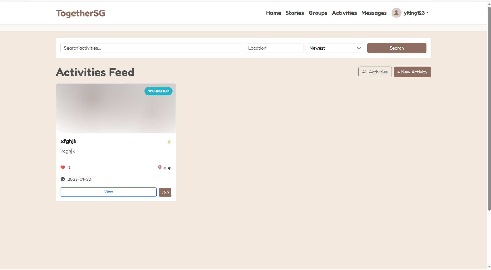
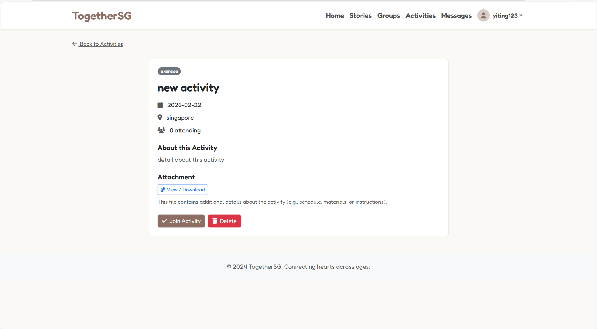
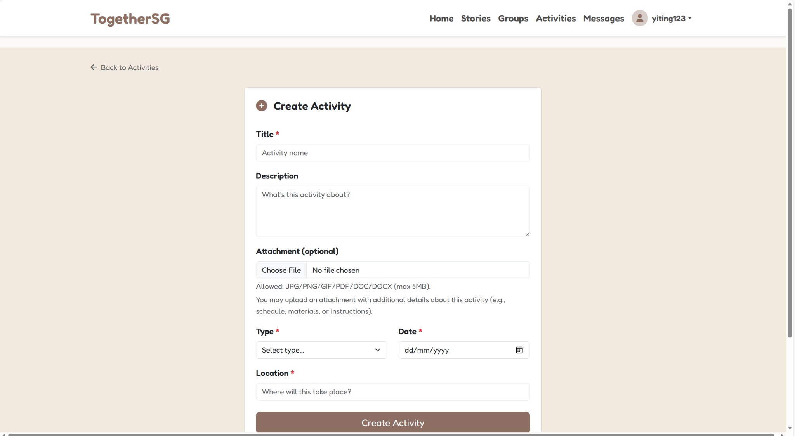

Project: TogetherSG - Activities Module (Flask Web App)
Overview: A web feature that lets users create, browse, and join community activities. Users can also upload an attachment (e.g., PDF schedule) when creating an activity.
Tech Stack:
Python Flask HTML (Jinja) CSS BootstrapMy Role: I worked on the Activities UI templates and the main user flow (feed → create → view → manage).
What I did (Contributions):
- Improved the Activities pages using Jinja templates (feed/list, create form, and activity details view).
- Added required fields and supported file uploads for attachments on the create activity form.
- Tested the flow end-to-end and fixed UI/logic issues to make navigation and layout more consistent.
Outcome (Results):
- Completed an end-to-end flow: Activities Feed → Create Activity (with optional attachment) → View Details → Join/Delete.
- Improved usability with clearer layout, readable activity details, and consistent navigation back to the feed.
Screenshots (Feature):
  Code Evidence (My Work)
These screenshots show the templates I worked on for the Activities module.
Create Activity Page (create.html) — Form structure, required fields, and file upload support.

Activity Details Page (view.html) — Details layout and navigation for the activity view.

Links:
- GitHub Repository: https://github.com/yiting123/WDP-jilin